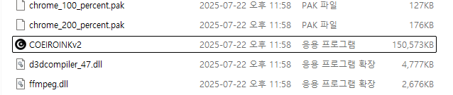

COEIROINK 음성 합성 (Text-to-Speech)¶
1. 개요 (Overview)¶
COEIROINK는 일본어를 중심으로 한 텍스트 음성 합성(TTS) 프로그램입니다.
자연스러운 대사형 음성을 생성할 수 있으며, 다양한 캐릭터 음성을 추가로 다운로드하여 사용할 수 있습니다.
VoiceScriptPlayer에서는 대본 음성화, 캐릭터 보이스 합성 등에 활용할 수 있습니다.
2. 설치 및 준비 (Installation & Setup)¶
-
COEIROINK 다운로드
공식 다운로드 페이지에서 최신 버전을 내려받습니다. -
CPU 버전
- 모든 PC에서 실행 가능
- 속도가 느릴 수 있으나, GPU가 없는 환경에서 안정적으로 사용 가능
-
GPU 버전 (CUDA 사용)
- NVIDIA GPU 환경에서 동작
- CPU 대비 3~10배 빠른 처리 속도
- 실행을 위해 CUDA(권장 11.8) 가 설치되어 있어야 합니다.
- CUDA 다운로드 페이지

- 실행 준비
- COEIROINK는 설치 과정이 없습니다.
- 다운로드한 압축(zip) 파일을 원하는 위치에 해제한 뒤,
그 안의COEIROINK2.exe파일을 직접 실행하면 됩니다. -
기본 경로 변경이나 관리자 권한 실행은 필요하지 않습니다.
 -
첫 실행 시 약관 동의
- COEIROINK를 처음 실행하면 이용 규약(利用規約) 동의 화면이 표시됩니다.
- 반드시 "利用規約" 버튼을 눌러 내용을 확인해야 왼쪽의 「同意する(동의하기)」 버튼이 활성화됩니다.
- 동의하지 않으면 프로그램을 종료할 수밖에 없으므로, 반드시 동의 후 사용해야 합니다.
- 또한 COEIROINK를 이용할 때는 크레딧 표기가 필수입니다. (예:
COEIROINK:合成音声名)

3. 설정 방법 (Configuration)¶
COEIROINK는 실행만 해두면 VoiceScriptPlayer가 자동으로 연결할 수 있습니다.
아래는 프로그램 상단 메뉴별 설명입니다.
📂 프로젝트 메뉴¶

- 新規プロジェクトを作成 → 새 프로젝트 만들기
- プロジェクトを開く → 기존 프로젝트 열기
- プロジェクトを名前をつけて保存 → 새 이름으로 저장
- プロジェクトを上書き保存 → 덮어쓰기 저장
- 選択中の音声の書き出し → 선택한 음성만 내보내기
- 全ての音声の書き出し → 모든 음성 내보내기
- 全ての音声の繋げて書き出し → 모든 음성을 이어서 내보내기
- テキストファイルを読み込み → 텍스트 파일 불러오기
- テキストファイルを書き出し → 텍스트 파일로 저장
- 前回終了時の状態を復元 → 이전 실행 시 상태 복원
👤 캐릭터 메뉴¶

- キャラクター設定 → 캐릭터 설정 (프로필, 이름 등)
- キャラクターダウンロード → 캐릭터 다운로드 (공식 라이브러리에서 음성 추가)
- キャラクター結合 → 캐릭터 병합 (여러 캐릭터 데이터 통합)
⚙️ 설정 메뉴¶

- ヘルプ → 도움말
- 辞書登録 → 사용자 사전 등록 (발음/단어 보정)
- プリセット管理 → 프리셋 관리 (설정값 저장/불러오기)
- ショートカット一覧 → 단축키 목록
- オプション → 옵션 (API 포트, 기본 동작 설정 등)
🎛️ 음성 조절 패널¶
- 話速 (화속) → 말하는 속도 (기본값 1.0)
- 声の高さ → 목소리 높낮이 (Pitch)
- 加工手法 → 처리 방식 (예: TD-PSOLA)
- 強さ → 발화 강도
- 각 항목에는 -5/-1/+1/+5 버튼으로 미세 조절 가능
💬 텍스트 입력 & 실행¶
- 하단 입력창에 텍스트 입력 후 ▶ 버튼 클릭 → 음성 합성 실행
- 🔄 버튼 → 합성 재실행
- 💾 버튼 → 음성을 파일로 저장
4. VoiceScriptPlayer에서의 사용 방법¶

COEIROINK는 VoiceScriptPlayer의 Audio Editor 내에서 직접 제어할 수 있습니다.
프로그램 실행만 되어 있다면 자동으로 API 연결이 이루어집니다.
🗣️ 기본 사용 흐름¶
-
TextToSpeech 엔진 선택
드롭다운에서COEIROINK를 선택합니다.
연결 상태가 정상이라면 바로 캐릭터 목록이 표시됩니다. -
문장 입력
상단의 타임라인 또는 텍스트 박스에 여러 문장을 입력합니다.
각 문장은 개별 TTS 블록으로 구분되며, 타임라인에서 재생 순서를 조정할 수 있습니다. -
캐릭터 및 스타일 선택
좌측의 캐릭터 목록에서 사용할 보이스를 선택합니다.
스타일(예:노멀,감정형,속삭임)을 지정할 수 있습니다. -
음성 파라미터 조정
| 항목 | 설명 |
|---|---|
| 배속 | 말하는 속도 조절 (1.0 = 기본) |
| 피치 | 목소리 높낮이 조정 |
| 억양 | 문장의 리듬 및 강세 조정 |
| 볼륨 | 전체 출력 크기 조절 |
- 합성 및 미리보기
▶ 재생 버튼을 누르면 즉시 합성된 음성이 재생됩니다.
수정 사항이 있을 경우, 자동으로 다시 합성되어 미리보기에 반영됩니다.
🗾 히라가나/엑센트 제어¶
COEIROINK는 일본어 음성 합성에 최적화되어 있으며, 각 음절(모라)의 엑센트를 세밀하게 조정할 수 있습니다.
편집기 하단에는 발음 단위별 체크박스가 표시되어, 억양 패턴을 직접 설정할 수 있습니다.
| 표시 | 의미 |
|---|---|
| 🔹 체크 | 해당 음절이 강세(상승/하강) 위치 |
| ⚪ 미체크 | 평범한 억양 구간 |
💡 팁:
이 기능은 Prosody Editor와 동일한 방식으로 동작하며, 모라 단위로 직접 억양을 지정할 수 있습니다.
💬 자막 설정¶
하단의 자막 패널에서 자막 위치 및 스타일을 실시간으로 확인하고 수정할 수 있습니다.
| 항목 | 설명 |
|---|---|
| X / Y | 자막의 화면 위치 |
| FontSize / OutlineSize | 글자 크기와 외곽선 두께 |
| Dock | 화면 기준 위치 (상단/중앙/하단) |
| Fill / Outline | 글자 및 외곽선 색상 설정 |
| 자막 미리보기 | 합성된 음성과 함께 자막을 즉시 확인 가능 |
🧩 타임라인 제어¶
- 각 문장은 타임라인 상에서 개별 블록으로 표시됩니다.
- 드래그로 위치를 이동하거나 길이를 조정할 수 있으며,
비디오나 스크립트 트랙과 완전히 동일한 방식으로 작동합니다. - 여러 문장을 순차적으로 배치해 대사 씬 전체를 구성할 수 있습니다.
📦 출력 위치¶
| 항목 | 경로 |
|---|---|
| 생성된 음성 파일 | Asset/Sound/ 폴더에 자동 저장 |
| 자막 데이터 | 동일 경로 내 .srt 또는 프로젝트 메타 데이터로 저장 |
5. 주의사항 (Notes & Limitations)¶
- COEIROINK는 설치형 프로그램이 아니라 실행 파일 방식으로 제공됩니다.
- Windows 전용 지원 (Mac/Linux는 미지원)
- CPU 버전은 느리지만 호환성이 좋고, GPU 버전은 빠르지만 NVIDIA GPU + CUDA(권장 11.8) 환경이 필요합니다.
- 일부 보이스는 상업적 이용 불가일 수 있으므로 반드시 보이스별 라이선스를 확인하세요.
- API 포트(
50032)가 다른 프로그램과 충돌할 경우 설정에서 변경해야 합니다. - COEIROINK 이용 시 크레딧 표기(예:
COEIROINK:합성음성명)는 필수입니다. VoiceScriptPlayer에서는 자동으로 크레딧 표기가 생성됩니다.
6. 라이선스 및 출처 (License & Credits)¶
- COEIROINK 본체: 무료 배포 (비상업/상업 사용 가능)
- 보이스 데이터: 각 제작자별 라이선스 상이
- 공식 사이트: https://coeiroink.com/
7. 문제 해결 (Troubleshooting / FAQ)¶
-
❓ "VoiceScriptPlayer에서 COEIROINK를 찾을 수 없습니다."
→COEIROINK.exe가 실행 중인지 확인하세요. -
❓ "API 연결에 실패했습니다."
→ COEIROINK가 실행 중인지, 포트(50032)가 다른 프로그램과 충돌하지 않는지 확인하세요. -
❓ "보이스가 목록에 표시되지 않습니다."
→ COEIROINK 내에서 보이스 라이브러리를 추가했는지 확인하세요. -
❓ "속도가 너무 느립니다."
→ GPU 버전을 설치하거나, 짧은 대사 단위로 나눠서 합성하세요.